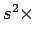

: この文書について...
: NumRu::Derivative
: NumRu::Derivative
本ドキュメントでは, NumRu::Derivative で定義される threepoints_O2nd_deriv で用いる
不等間隔格子の二次精度差分についてまとめる. この差分は極端に不等間隔ではないデータに
対して二次精度の差分を与えるものである.
今, 関数を, 数列
上に離散化する.
ここで, とはほぼ同じオーダーの値である場合を想定して議論を進める.
ここで, を各格子点近傍にてテイラー展開する.
ここで,
はそれぞれにおけるのに関する一階および二階の微分項, はのオーダーの値を表す. 両式からの項を消去するために, (1.4) - (1.5) を計算すると,
となる. 上式を変形して
これより, 2次精度差分の公式は
と書くことができる.
Tsukahara Daisuke
平成17年3月3日